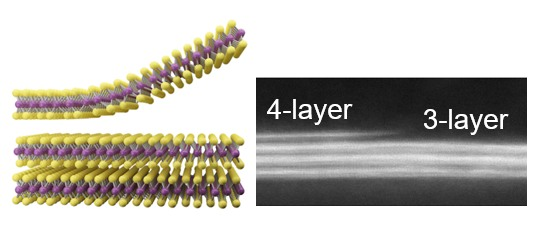
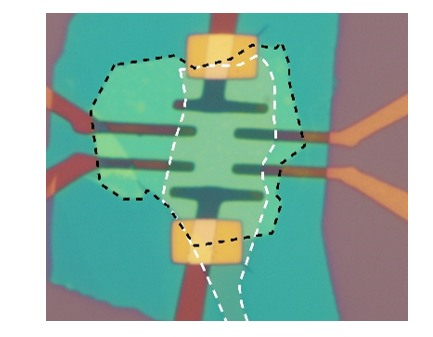
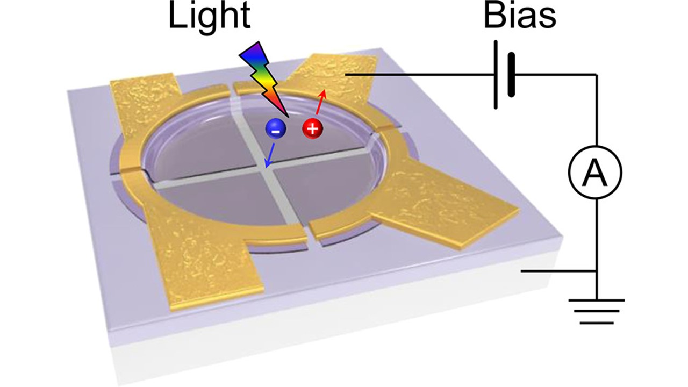
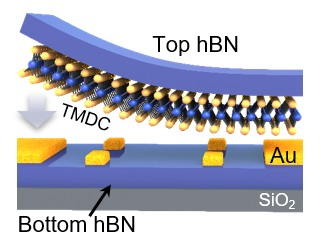
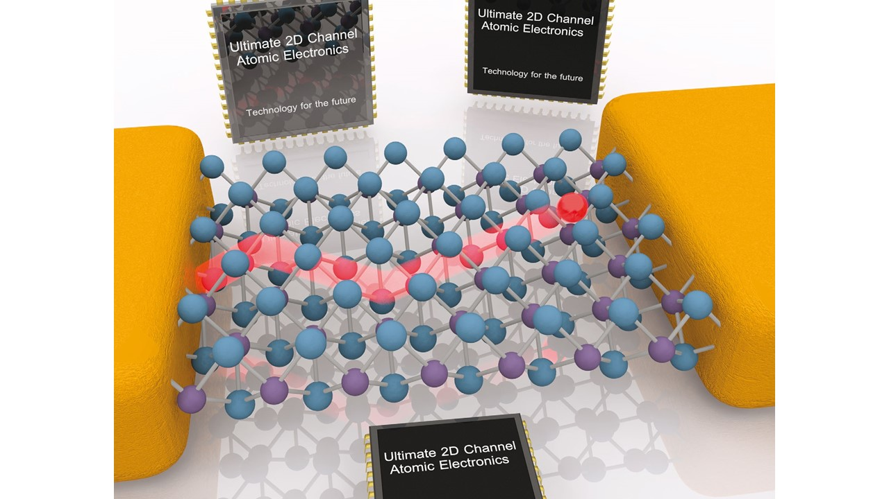

1. 纳米电子学
- 无损原子层刻蚀。首次开发出兼具原子精度的无损数字式刻蚀能力，整套工艺与CMOS完全兼容，结合光刻技术可实现复杂的原子级厚度图案雕刻。请参考Nat. Commun. 13, 1844 (2022)。
- 半悬空晶体管。利用范德华堆垛技术，构筑了沟道/衬底半隔离的的晶体管，基本无扫描回滞。请参考Appl. Phys. Lett. 121, 023503 (2022)。
- 超净介质包覆的晶体管。利用范德华堆垛技术，开发出在超晶六方氮化硼介质上先电极后沟道的二维材料的晶体管构筑方法，晶体管电学性能优异，基本无电学回滞、低温迁移率基本保持在1000 cm2V-1s-1以上。请参考ACS AMI 14, 18697 (2022)。
- 精准片上集成技术。通过开发液相纳米沉降和电极锚固等异质集成关键技术，成功解决大规模石墨烯阵列跨台阶集成的工艺难题，实现了精准的石墨烯/硅阵列集成，并演示2×2四象限光探测器阵列。精准的三维集成工艺为大面积二维原子晶体与硅融合的片上集成应用开拓了一条新思路。请参考ACS Nano. 13, 2654 (2019)。
- 石墨烯电子器件。利用极性自适应和超高效率顶栅操控，首次获得具备电压增益（约7）和匹配输入输出特性的石墨烯电压放大器，为使用高迁移率石墨烯发展级联式高频电压振荡源及相关应用提供了可行的方案。工作受到国际关注，被欧盟“旗舰计划”路线图中评价为“第一次实现”，受邀至美国物理协会（APS）2011年度 March Meeting 新闻发布会演讲，还受到《日经产业新闻》、《日刊工业新闻》和《化学工业日报》等媒体报道。请参考Nano Lett. 10, 2357 (2010); ACS Nano. 5, 500 (2011); Small 7, 1552 (2011).



2. 半导体器件物理
- 载流子散射理论。发展了用于非对称器件结构下库仑杂质散射的普适计算模型，精准考虑了沟道厚度变化、不对称介电环境和载流子分布等诸多因素，严格推导了表面任意分布的库仑杂质对纳米厚度沟道内载流子散射的库仑力、散射矩阵元以及载流子极化函数 [J. Phys. Soc. Jpn., 84, 121011 (2015)] ，指出表面库仑杂质是原子级厚度晶体管沟道迁移率衰退的主要因素，并对性能优化给出了合理建议 [Nano Lett., 22, 6671(2022), Nano Lett. 13, 3546 (2013)]。理论和实验工作阐明了原子级厚度对半导体材料迁移率的影响及规律，为开发和优化后摩尔超短沟道器件以及高密度集成提供了有益指导，还受邀撰写综述文章Chem. Soc. Rev., 45, 118 (2016)。
- 金属/半导体接触。系统研究了二维材料厚度和量子限制效应引起的电子注入势垒和接触电阻的变化，观察到维度降低导致的金/半接触增加 [ACS Nano, 8, 12836 (2014)]。引入超低功函数金属作为电极，研究了Yb/WS2的接触性能。结果表明，沟道表层损伤造成的界面能级钉扎是二维材料高接触电阻的起源 [Appl. Phys. Lett., 120, 253505 (2022)]。
- 2D材料厚度表征。 厘清了光干涉效应对2D材料在绝缘衬底上的拉曼信号强度的影响规律，提出了一种2D材料的厚度表征方法ACS Nano, 6, 7381 (2012)。


